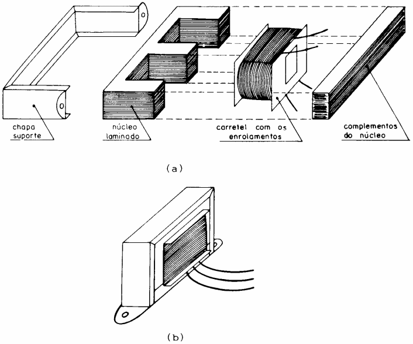
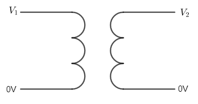
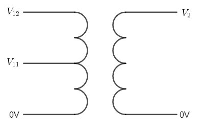
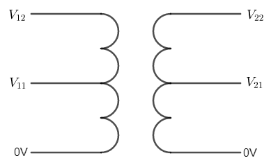
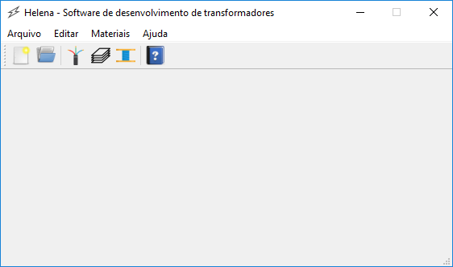
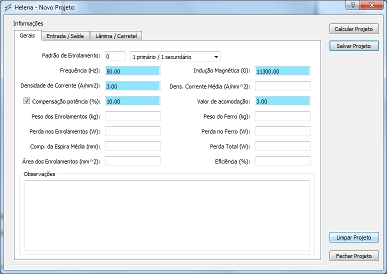

This is a software to create mono phase transformer project.
This informations are in English or Portuguese
Informations in English not create now!
Uma ideia básica dos circuitos do transformador pode ser visto na Figura 1. Nesta figura pode-se ver os elementos básicos do esquema de um transformador.
Figura 1: Esquema de um transformador monofásico
Fonte: https://en.wikipedia.org/wiki/Transformer
Nesta figura, pode-se observar uma fonte de alimentação (Vp), uma corrente de entrada (Ip), tensão de saída (Vs), uma corrente de saída (Is), uma carga (ZL), número de espiras no circuito de entrada (Np) e número de espiras no circuito de saída (Ns).
A Figura 2 exibe uma transformador em visão explodida, no qual pode-se ver a chapa de suporte, o núcleo composto de lâminas E, o carretel junto com as espiras de fio e o fechamento do núcleo de lâminas I. Nas mesma Figura 2 pode-se ver ainda a figura de uma transformador monofásico montado com seus fios de conexão de entrada ou saída de tensão/corrente.
Figura 2: Visão explodida do transformador monofásico

Fonte: http://www.joinville.udesc.br/portal/professores/joaquim/materiais/Transformador.pdf
O software Helena será utilizado para automatizar os cálculos de transformadores monofásicos (outros tipos serão implementados ao longo da vida deste) de até 3 kVA, com no máximo três condutores na entrada e/ou saída, conforme Figura 3.
Figura 3: Tipos de entrada e saída de transformadores
  
Fonte: Próprio autor
A seguir será exibido as telas e as informações associadas a elas, para que possam ser modificados pelo usuário do software.
A tela contida na Figura 4, é a tela do principal do software Helena, no qual são exibidos os seguintes itens, conforme Tabela 1:
Figura 4: Tela principal do software

Fonte: Próprio autor
Tabela 1: Relação dos itens que compõem a tela principal
| ITEM | DESCRIçãO |
| Menu Arquivo: | Responsável por dar acesso as ações de "Novo Projeto", "Abrir Projeto", e "Sair" do aplicativo. |
| Menu Editar: | Responsável por permitir acessar as informações de conexão e tabelas do banco de dados dos itens carretel, lâmina, fios e transformadores. Neste menu contém o item "Preferências". |
| Menu Materiais: | Responsável por permitir acesso as ações relativas aos itens carretéis, lâminas e fios que compõem o básico do transformador. Neste menu contém as acões "carretéis, lâminas e fios. |
| Menu Ajuda: | Neste menu tem-se os itens "Exibir Ajuda", relativo a este documento que você está lendo. Também há o item "Sobre o Helena", no qual explicita a licença de uso deste. |
| ícones: | São alguns ícones que tem suas ações contidas nos menus. |
Fonte: Próprio autor
A próxima tela é a de "Novo Projeto", no qual há a necessidade de preenchimento de algumas informações para o cálculo de outros parametros do transformador. Esses parametros podem ser vistos na Figura 5.
Figura 5: Tela "Novo Projeto" dos dados gerais do software

Fonte: Próprio autor
Note que alguns campos já vem setado, sendo os campos em azul, para que facilite saber quais são os dados essenciais para cálculo automatico do transformador.
Tabela 2: Relação dos itens que compõem a tela Novo Projeto
| ITEM | DESCRIçãO |
| Padrão de Enrolamento: | Este é o padrão de enrolamento dos circuitos primário (entrada) e secundário (saída) do transformador. |
| Frequência: | é a frequência da tensão que alimenta o transformador, em hertz (Hz). |
| Indução Magnética: | é a indução magnética máxima gerada pela pelos enrolamentos do primário ao passar uma corrente por estes, e o valor é dado em gauss (G). |
| Densidade de Corrente: | é a quantidade de corrente que flui em uma área de 1 mm2, e a sua unidade é o ampères por milimetro quadrado (A/mm2). |
| Densidade de Corrente Média: | é a densidade de corrente média entre o circuito primário e secundário. |
| Compensação de potência: | A compensação de potência está relacionada a perda no ferro (lâmina) que no caso pode ser perda por histeresse e também a relação sobre o verniz que recobre as lâminas. |
| Valor de acomodação: | é o valor relativo a relação entre a área da janela da lâmina pela seção transversal de todos os fios condutores que passam pela janela da lâmina. |
| Peso dos Enrolamentos: | é o peso do cobre ou outro material usado como condutor nos circuitos primário e secundário do transformador, medido em quilograma (kg). |
| Peso do Ferro: | é o peso das lâminas usada nos transformador, medido em quilograma (kg). |
| Perdas nos Enrolamentos: | São as perdas por efeito Joule, dada em watts (W). |
| Perda no Ferro: | é a perda nas lâminas no qual está relacionada as perdas de Focoault e Histeress, e é da em watts (W). |
| Comprimento da Espira Média: | é o comprimento da espira no qual está ao centro de todas as outras espiras no transformador, e é usada para o cálculo do peso dos enrolamentos, sendo que sua unidade de media é o milimetro (mm). |
| Perda Total: | é a perda do enrolamento mais a perda no núcleo e é dada em watts (W). |
| área do Enrolamentos: | é a área dos enrolamentos primário e secundário, dado em milimetro ao quadrado (mm2). |
| Eficiência: | é a eficiência do transformador, dado em porcentagem. |
| Observações: | São as observações sobre este projeto (transformador). |
Fonte: Próprio autor
| Dados iniciais | ||
| Padrão | = | 0 (2 condutores na entrada e 2 condutores na saída) |
| Frequência | = | 50 Hz |
| Indução Magnética Máxima | = | 11300 G |
| Densidade de corrente | = | 3 A/mm2 |
| Compensação de perda de potência | = | 10% |
| Valor de acomodação dos condutores | = | 3 |
| Tensão de entrada | = | 120 V |
| Tensão de saída | = | 220 V |
| Potência de saída | = | 300 VA |
| Tipo do fio de entrada | = | redondo |
| Tipo do fio de saída | = | redondo |
| Tipo de lâmina | = | padrão |
| Compensação em relação a espessura da lâmina | = | 10% |
| Tipo de carretel | = | STSR |
| Execução | ||
| Corrente de saída | = | 1.3636363636363635 A |
| Potência de entrada | = | 330 VA |
| Corrente de entrada | = | 2.75 A |
| Seção tranversal necessário do fio do secundário | = | 0.45454545454545453 mm2 |
| AWG do fio do secundário | = | 20 |
| Seção tranversal do fio selecionado do secundário | = | 0.518 mm2 |
| Densidade de corrente do fio selecionado do secundário | = | 2.632502632502632 A/mm2 |
| Seção tranversal necessário do fio do primário | = | 0.9166666666666666 mm2 |
| AWG do fio do primário | = | 17 |
| Seção tranversal do fio selecionado do primário | = | 1.038 mm2 |
| Densidade de corrente do fio selecionado do primário | = | 2.649325626204239 A/mm2 |
| Seção magnética | = | 1837.1173070873836 mm2 |
| Seção geométrica | = | 2020.8290377961218 mm2 |
| Largura da perna da lâmina | = | 44.95363208680831 mm |
| Largura da perna da lâmina | = | 4.495363208680831 cm |
| Lâmina selecionada | = | nº 7 (50 mm) |
| Modelo do carretel | = | DR 03 |
| Largura do carretel | = | 50 mm |
| Comprimento do carretel | = | 41 mm |
| Altura do carretel | = | 75 mm |
| Tipo do carretel | = | STSR |
| Seção magnética | = | 2050 mm2 |
| Seção geométrica | = | 18.636363636363637 cm2 |
| Espiras do secundário | = | 470.5763393438765 espiras |
| Espiras do primário | = | 256.6780032784781 espiras |
| Seção dos fios | = | 535.09 mm2 |
| Valor de acomodação dos condutores | = | 3,513427647685436 > 3.0 |
Alguns campos já vem setado, sendo os campos em azul, para que facilite, necessitando preencher os valores de tensão de entrada e saída, e potência de saída.
A criação da folha de fabricação com as informações relevantes na produção podem ser criadas.
O pontos deste projeto são:
continua...